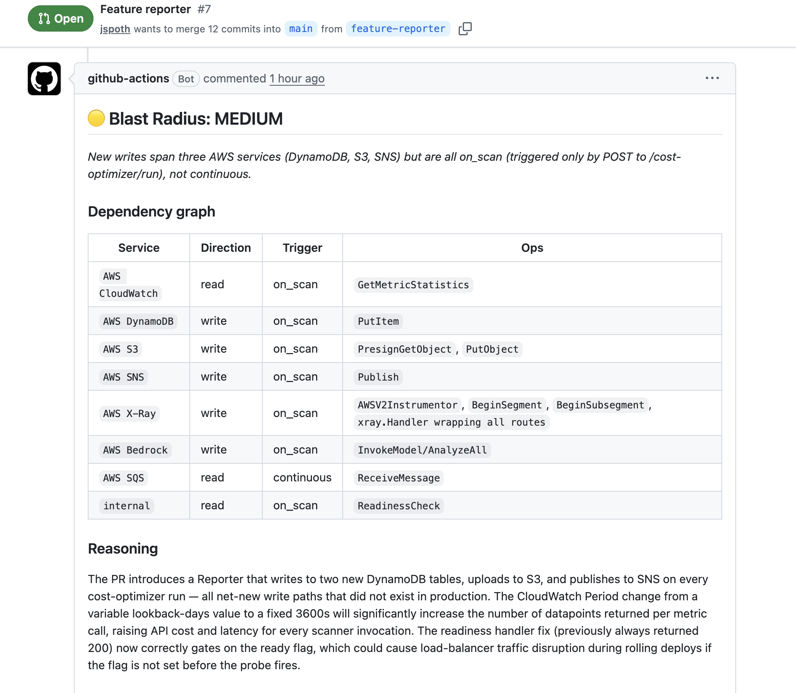
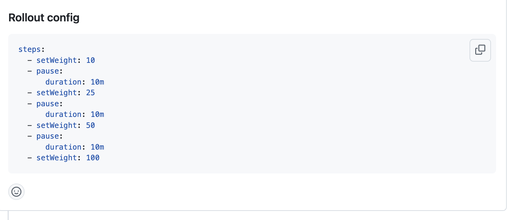

Last updated: June 2026
A GitHub Actions workflow that runs on every Go PR, uses Claude via Bedrock to score deployment risk, and generates an Argo Rollouts canary config scaled to the blast radius.
AI is helping engineers ship PRs faster than ever. That acceleration is real — but it also means more changes hitting production more frequently, often without a clear picture of what could go wrong. Code review tools verify correctness: does the code do what it says, does it pass checks. What they don't assess is deployment risk.
A write inside a background goroutine is a fundamentally different risk from a write inside an HTTP handler. One runs continuously against production; the other only runs when triggered. That distinction determines whether a change can roll out at 50% weight or needs manual promotion gates at every step. No static analysis tool reasons about it.
The workflow triggers on every PR that touches **.go files. It pulls the full git
diff, identifies the entry point (main.go), and sends both to Claude. Concurrency
is scoped per PR number — if a new push arrives while a run is in progress, the in-progress run
is cancelled and the new one starts. Analysis always reflects the latest commit.
The prompt treats the diff as two layers:
This prevents pre-existing interactions in modified files from inflating the score. If a file that already had a continuous DynamoDB write gets a minor error-handling fix, that write doesn't count as new blast radius.
| Score | Condition | Rollout strategy |
|---|---|---|
| 🟢 low | Read-only, on_scan or none | 10 → 50 → 100%, 5m pauses |
| 🟡 medium | Read-only continuous, or writes on_scan | 10 → 25 → 50 → 100%, 10m pauses |
| 🟠 high | Writes, continuous, single service | 5 → 10 → 25 → 50 → 100%, 20m pauses |
| 🔴 critical | Writes, continuous, multiple services | 2 → 5 → 10% with manual promotion at every step |
Actual PR comment generated for the reporter + X-Ray instrumentation PR: a new DynamoDB/S3/SNS reporter and X-Ray tracing added to the cost optimizer pipeline.


The rollout config is posted as a PR comment alongside the score. It's a recommendation — the engineer reviews it and decides whether to use it. Nothing is committed or applied automatically.